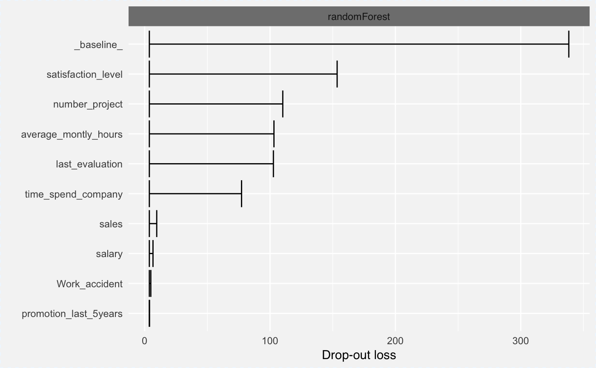
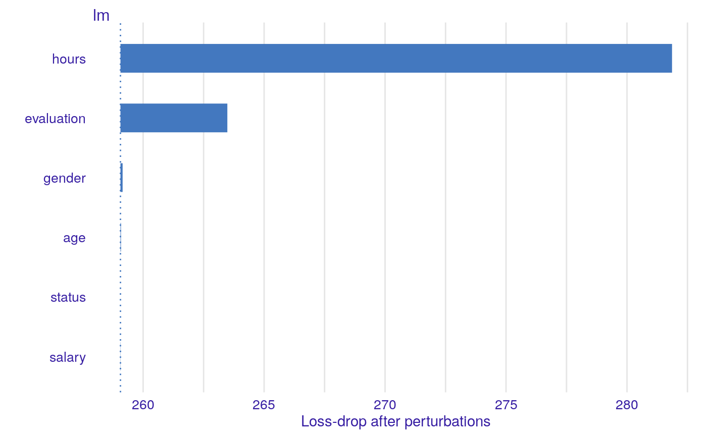

Plots Global Model Explanations (Variable Importance)
plot.variable_importance_explainer.RdFunction plot.variable_dropout_explainer plots dropouts for variables used in the model.
It uses output from variable_dropout function that corresponds to permutation based measure of variable importance.
Variables are sorted in the same order in all panels. The order depends on the average drop out loss. In different panels variable contributions may not look like sorted if variable importance is different in different in different mdoels.
# S3 method for variable_importance_explainer plot(x, ..., max_vars = 10, bar_width = 10, show_baseline = FALSE, desc_sorting = TRUE)
Arguments
| x | a variable dropout exlainer produced with the 'variable_dropout' function |
|---|---|
| ... | other explainers that shall be plotted together |
| max_vars | maximum number of variables that shall be presented for for each model |
| bar_width | width of bars. By default 10 |
| show_baseline | logical. Should the baseline be included? |
| desc_sorting | logical. Should the bars be sorted descending? By default TRUE |
Value
a ggplot2 object
Examples
library("randomForest") HR_rf_model <- randomForest(as.factor(status == "fired")~., data = HR, ntree = 100) explainer_rf <- explain(HR_rf_model, data = HR, y = HR$status == "fired")#> Preparation of a new explainer is initiated #> -> model label : randomForest (default) #> -> data : 7847 rows 6 cols #> -> target variable : 7847 values #> -> predict function : yhat.randomForest will be used (default) #> -> predicted values : numerical, min = 0 , mean = 0.3616465 , max = 1 #> -> residual function : difference between y and yhat (default) #> -> residuals : numerical, min = -0.77 , mean = 0.002186823 , max = 0.76 #> A new explainer has been created!#> Warning: Please note that 'variable_importance()' is now deprecated, it is better to use 'ingredients::feature_importance()' instead. #> Find examples and detailed introduction at: https://pbiecek.github.io/PM_VEE/featureImportance.htmlhead(vd_rf)#> variable dropout_loss label #> 1 _full_model_ 40.2320 randomForest #> 2 status 40.2320 randomForest #> 3 evaluation 100.3944 randomForest #> 4 gender 106.4699 randomForest #> 5 age 132.5090 randomForest #> 6 salary 151.8582 randomForestplot(vd_rf)HR_glm_model <- glm(status == "fired"~., data = HR, family = "binomial") explainer_glm <- explain(HR_glm_model, data = HR, y = HR$status == "fired")#> Preparation of a new explainer is initiated #> -> model label : lm (default) #> -> data : 7847 rows 6 cols #> -> target variable : 7847 values #> -> predict function : yhat.glm will be used (default) #> -> predicted values : numerical, min = 0.00861694 , mean = 0.3638333 , max = 0.7822214 #> -> residual function : difference between y and yhat (default) #> -> residuals : numerical, min = -0.7755901 , mean = -1.294707e-13 , max = 0.9820537 #> A new explainer has been created!logit <- function(x) exp(x)/(1+exp(x)) vd_glm <- variable_importance(explainer_glm, type = "raw", loss_function = function(observed, predicted) sum((observed - logit(predicted))^2)) head(vd_glm)#> variable dropout_loss label #> 1 _full_model_ 259.0632 lm #> 2 salary 259.0569 lm #> 3 status 259.0632 lm #> 4 age 259.0833 lm #> 5 gender 259.1525 lm #> 6 evaluation 263.4810 lmplot(vd_glm)library("xgboost")#> Error in library("xgboost"): nie ma pakietu o nazwie 'xgboost'model_martix_train <- model.matrix(status == "fired"~.-1, HR) data_train <- xgb.DMatrix(model_martix_train, label = HR$status == "fired")#> Error in xgb.DMatrix(model_martix_train, label = HR$status == "fired"): nie udało się znaleźć funkcji 'xgb.DMatrix'param <- list(max_depth = 2, eta = 1, silent = 1, nthread = 2, objective = "binary:logistic", eval_metric = "auc") HR_xgb_model <- xgb.train(param, data_train, nrounds = 50)#> Error in xgb.train(param, data_train, nrounds = 50): nie udało się znaleźć funkcji 'xgb.train'explainer_xgb <- explain(HR_xgb_model, data = model_martix_train, y = HR$status == "fired", label = "xgboost")#> Preparation of a new explainer is initiated #> -> model label : xgboost #> -> data : 7847 rows 6 cols #> -> target variable : 7847 values#> Error in paste0("yhat.", class(model)): nie znaleziono obiektu 'HR_xgb_model'#> Error in "explainer" %in% class(explainer): nie znaleziono obiektu 'explainer_xgb'head(vd_xgb)#> Error in head(vd_xgb): nie znaleziono obiektu 'vd_xgb'plot(vd_xgb)#> Error in plot(vd_xgb): nie znaleziono obiektu 'vd_xgb'#> Error in combine_explainers(x, ...): nie znaleziono obiektu 'vd_xgb'# NOTE: # if you like to have all importances hooked to 0, you can do this as well vd_rf <- variable_importance(explainer_rf, type = "difference") vd_glm <- variable_importance(explainer_glm, type = "difference", loss_function = function(observed, predicted) sum((observed - logit(predicted))^2)) vd_xgb <- variable_importance(explainer_xgb, type = "difference")#> Error in "explainer" %in% class(explainer): nie znaleziono obiektu 'explainer_xgb'#> Error in combine_explainers(x, ...): nie znaleziono obiektu 'vd_xgb'